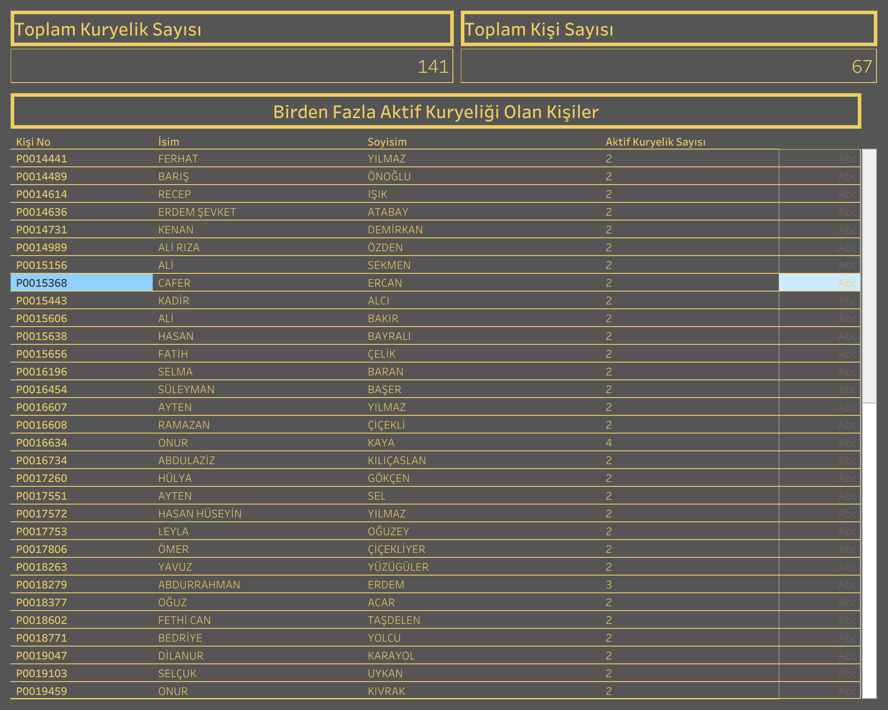

Canlı Rapora Erişin
Güncel kuryelik verilerini Tableau üzerinde interaktif olarak görüntüleyin.
Dashboard Hakkında
Ne Gösterir?
Bu rapor, sistemde birden fazla aktif kuryeliği bulunan kişileri tespit ederek listeler. Toplam kuryelik sayısı ve bu kuryeliklere sahip kişi sayısını gösterir; çift kayıt veya paralel kuryelik durumlarının operasyonel yönetiminde kullanılır.
- Toplam Kuryelik Sayısı: Sistemdeki aktif kuryeliklerin toplam adedi
- Toplam Kişi Sayısı: Birden fazla kuryeliği olan benzersiz kişi sayısı
- Kişi Detayı: Kişi No, isim, soyisim ve aktif kuryelik sayısı sütunlarını içeren detaylı liste
- Aktif Kuryelik Sayısı: Her kişinin kaç adet aktif kuryeliği bulunduğunu gösterir (2, 3, 4+ gibi)
Dashboard Önizleme

Birden Fazla Kuryeliği Olan Kişiler — Tableau